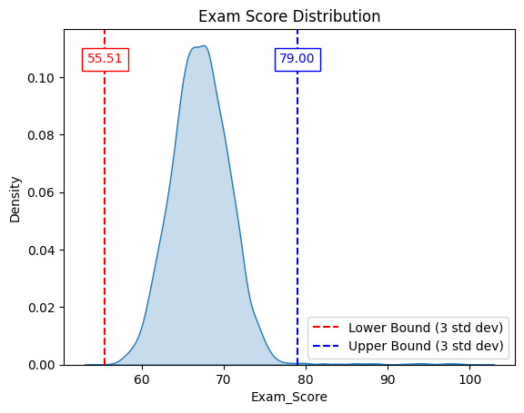
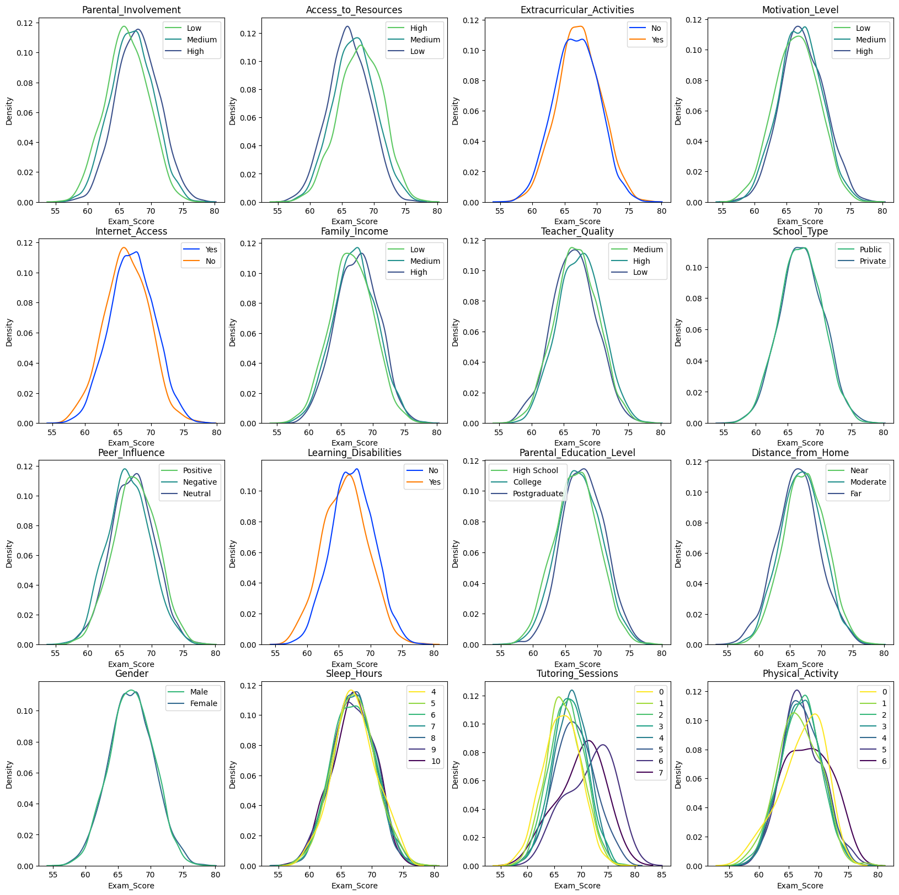
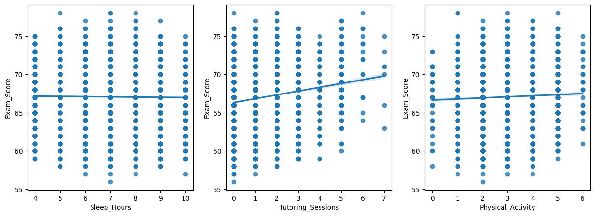
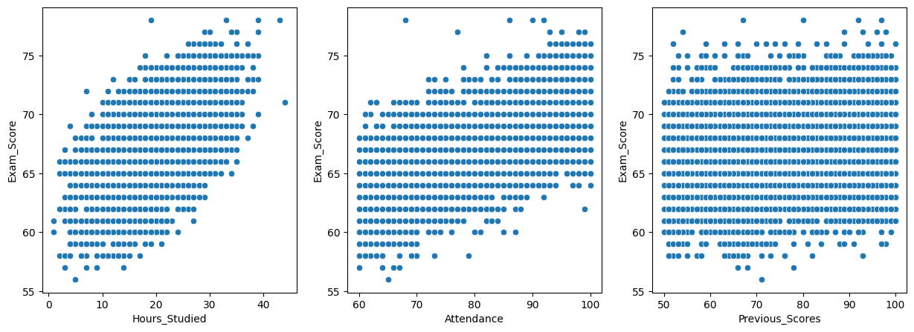
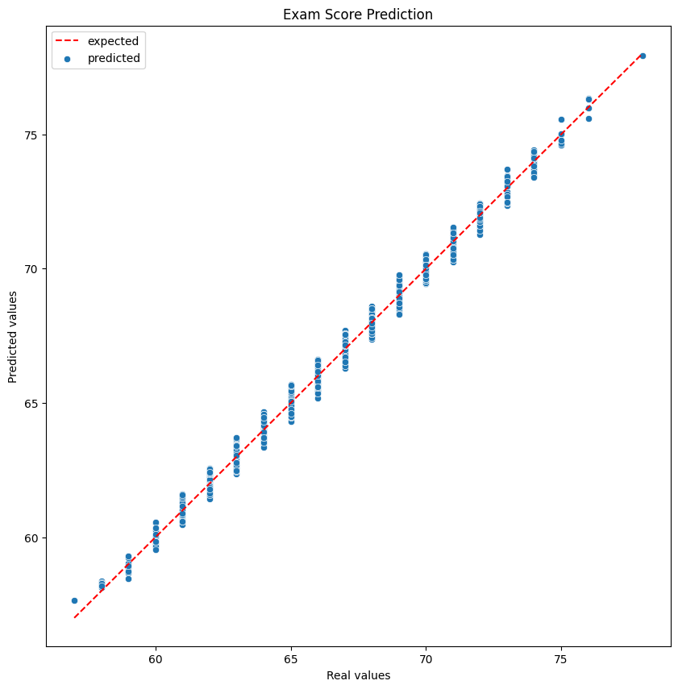

Relevant Feature Analysis
An analysis was conducted to identify the factors that significantly influence student performance.
- Data Exploration
Initially, we computed summary statistics of the preprocessed dataset (dropped NaN samples) exam scores to understand their distribution (shown in Table 1).
|
Statistic |
Value |
|
Count |
6607 |
|
Mean |
67.24 |
|
Standard Deviation |
3.89 |
Table 1: Summary statistics of Exam Scores

Figure 1: Summary statistics of Exam Scores
With a mean of 67.24 and a standard deviation of 3.89, we narrowed our scope of data to visualize to be within 3 standard deviations of the mean in order to increase visibility in differences around the mean.
- Categorical Features

Figure 2: The distributions of exam scores against categorical features.

Figure 3: A scatterplot of numerical features (Sleep Hours, Tutoring Sessions, and Physical Activity) against exam scores with a low quantity of unique values.
We defined a categorical feature as either: (1) A non-numerical attribute (ex. Low, Medium High) or (2) An integer valued feature with less than 10 unique values. While a non-numerical feature is definitionally categorical, a numeric feature with a low number of unique values can also be treated categorically. This is particularly helpful when the feature is not guaranteed to produce a linear relation to the target variable, or due to the low number of unique values, a relationship would be hard to extrapolate (see Figure 3). For example, a raw increase in the number of sleep hours is not guaranteed to produce a proportional increase in performance due to various factors (such as research that shows there is an “optimal” number of hours of sleep to get). By treating these values as categories, the distributions by subgroup can be plotted which provides a better intuition for the data (see Figure 2).
From a visual perspective, most of these distributions seem fairly close together, with parental involvement, access to resources, and number of tutoring sessions having the most variation in their distributions. To assess which categorical variables cause a statistically significant difference in their means, 𝜇, a One-Way ANOVA (Analysis of Variance) test was performed. This test is used to find if the mean for two or more independent groups differ from each other. Given the hypothesis:
Ho: 𝜇1 = 𝜇2 = … = 𝜇k vs H1: At least one 𝜇i ≠ 𝜇j for some i and j, 𝛼=0.05
where k is the number of subgroups, the null hypothesis (Ho) will be rejected if p,the probability that the groups mean’s do not differ, is less than 0.05, and we can proclaim that at least one group is significantly different from the rest. The results of this test (Table 2) show that every categorical feature, except for Gender, School Type, and Sleep Hours, create a significant effect on student performance (at least for one group).
|
Categorical Column |
F-Statistic |
P-Value |
Significant |
|
Parental_Involvement |
107.55 |
1.17E-46 |
TRUE |
|
Access_to_Resources |
117.12 |
1.13E-50 |
TRUE |
|
Extracurricular_Activities |
26.36 |
2.92E-07 |
TRUE |
|
Motivation_Level |
34.02 |
2.02E-15 |
TRUE |
|
Internet_Access |
28.02 |
1.24E-07 |
TRUE |
|
Family_Income |
32.53 |
8.83E-15 |
TRUE |
|
Teacher_Quality |
21.78 |
3.76E-10 |
TRUE |
|
School_Type |
1.84 |
1.75E-01 |
FALSE |
|
Peer_Influence |
40.64 |
2.91E-18 |
TRUE |
|
Learning_Disabilities |
72.00 |
2.65E-17 |
TRUE |
|
Parental_Education_Level |
51.31 |
7.87E-23 |
TRUE |
|
Distance_from_Home |
37.41 |
7.03E-17 |
TRUE |
|
Gender |
0.06 |
8.01E-01 |
FALSE |
|
Sleep_Hours |
0.56 |
7.62E-01 |
FALSE |
|
Tutoring_Sessions |
32.48 |
1.21E-44 |
TRUE |
|
Physical_Activity |
2.46 |
2.21E-02 |
TRUE |
Table 2: One-way ANOVA statistical analysis test on categorical feature significance
- Continuous Features

Figure 4: A scatterplot of continuous features plotted against exam scores
|
Feature |
R-Value |
P-Value |
Significant |
|
Hours_Studied |
0.45 |
5.56E-308 |
TRUE |
|
Attendance |
0.58 |
0.00E+00 |
TRUE |
|
Previous_Scores |
0.17 |
1.15E-44 |
TRUE |
Table 3: Pearson Correlation Coefficient statistical analysis test on continuous feature significance
The correlation of the continuous features to performance (exam scores) demonstrates the strength of a relationship. While only hours studied and attendance seem to correlate significantly (see Figure 4), instead of discarding features based just on correlation values, a more statistically powerful way to determine relevant features is through significance testing. To assess which continuous features create significant differences in student performance, the Pearson-Correlation Coefficient Test can be used. This test is used to find if two variables are correlated significantly, or if the correlation could be caused by random chance. Given the following two-tailed hypothesis:
Ho: 𝜌 = 0 vs. H1: 𝜌 ≠ 0, 𝛼=0.05
where 𝜌 is the correlation coefficient, the null hypothesis (H0) is rejected if the probability that the correlation is due to random chance is below 0.05. By doing so we can say that a certain feature creates a statistically significant difference in student performance. Through this statistical testing, no continuous feature was deemed insignificant (see Table 3).
- Multiple Linear Regression
A multiple linear regression model was fitted to the data where all samples where the score lay within three standard deviations from the mean were kept. This approach was adopted based on the following considerations:
- Mitigating the influence of extreme outliers: large outliers can disproportionately affect the performance of regression models by skewing parameter estimates and undermining model assumptions (e.g. normality and homoscedasticity), thereby undermining the model’s predictive accuracy. Outliers often represent rare, anomalous conditions that do not align with the primary data distribution.
- Enhancing model robustness: By excluding extreme outliers, the model is better aligned with the assumptions of normality, and can better capture the underlying patterns within the majority of the data.
- Contextual interpretation of outliers: Outliers are often observed in the upper tail of the distribution (see Figure 3), and may reflect exceptional performance attributable to external factors not considered such as cognitive abilities (e.g. IQ) or supplementary accelerated education (Kumon). These outliers likely deviate from the expected population behavior based on the features provided.
The features input (after removing statistically insignificant features) are: Learning_Disabilities, Parental_Involvement, Access_to_Resources, Teacher_Quality, Internet_Access, Peer_Influence, Distance_from_Home, Parental_Education_Level, Extracurricular_Activities, Motivation_Level, Family_Income, Tutoring_Sessions, Hours_Studied, Physical_Activity, Previous_Scores, and, Attendance. All categorical features were transformed using one-hot encoding to convert to a numerical feature. This gave a model with a MAE of 0.31 (which indicates the expected absolute error between the predicted value and expected value) and a R-squared value of 0.9354 on the test set, which indicates a great fit of the model to new data (see Figure 4).

Figure 4: Expected vs Multiple Linear Regression Predicted values of Exam_Score on the test set
Visualization: Sleep Hours and Exam Scores
Explore the relationship between sleep hours, hours studied, and exam scores based on teacher quality.
For this visualization, we were able to segment students based on Attendance, Exam Scores, and Access to Resources. There seems to be a general pattern among the group that with higher attendance there tends to be a greater likelihood of exam success, although this pattern is not entirely clear.
However, the more interesting aspect of this graph is the access to resources. With higher access to resources, when pressing on that tab, there appears to be more students succeeding, and vice versa with the Low Access To Resources. This could potentially imply that higher resources can help more students succeed.
In the future, through further studies, we could study the types of resources and how each resource could impact student performance, as what these resources are appears to be unclear in the dataset.
To interact with this visualization, one would need to utilize the tool tip. This tool tip gives the user information about the Score the student received, the quality of their teacher, the number of hours they studied, and the number of hours of sleep that they received. Additionally, it also has two panels to receive additional perspective on the visualizations.
Visualization: Attendance vs Exam Scores
Explore how attendance and exam scores are affected by access to resources.
For this visualization, we can see the connection between sleep, Exam Scores, Hours Studied, and Teacher Quality. On the first graph, we can observe that students with "Medium" and "High" Quality teachers attributed more of the higher scores on the exam as well as less hours of sleep for the students before the exam.
Furthermore, through the second graph, we can see a general trend of students who were studying more tended to do better on the exam as a whole. Overall, however, the general trend is slightly unclear.
For future studies, we could further define what Teacher Quality means via metrics to get a better idea of how they relate to sleep, hours studied, and exam scores, and get a better idea of how that relates to student success.
To interact with this visualization, one could do two things. First, there are buttons with relations to the access to resources that the user could press to filter the graph to solely highlight the group with each type of access.
Furthermore, there is also a tool tip on the graph which the user could use to select data of certain points. Using this tool tip, the user could see each point's Attendance, Exam Score, Access to resources, and Family income status.
Visualization: Tutoring Sessions vs Exam Scores
Analyze how tutoring sessions relate to exam scores.
For this visualization, we wanted to observe the connection between Tutoring sessions and Scores on the Exam Scores. Tutoring sessions are typically services that are only available to higher or medium income level students, so we wanted to see if it would make a difference in the scores.
While observing the graph, we cannot see a clear trend in the data, suggesting that it is unclear what the impact of the tutoring sessions really are on students in this study based on the sheer scores alone. However, with further analysis, we can potentially see other trends.
To interact with the visualization, click on each point to see the number of hours that each student received of tutoring.